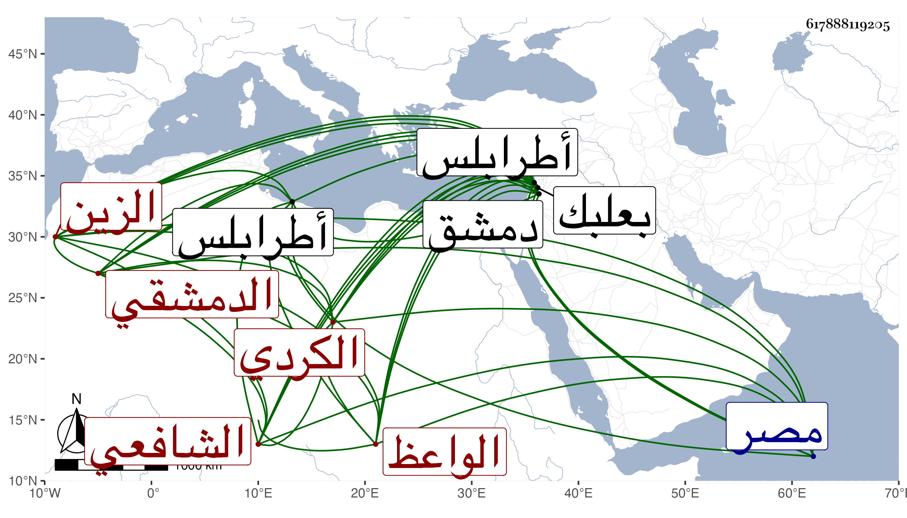

0902Sakhawi.DawLamic.ITO20230111-ara1.EIS1600.617888119205
Biography ID: 617888119205
417
عبد الرحمن بن يوسف بن الحسين الزين الكردي الدمشقي الشافعي الواعظ الآتي أبوه . حفظ التنبيه في صباه وقرأ على الشرف بن الشريشي ثم تعانى المواعيد فنفق سوقه فيها وراج عند العامة ودام على ذلك أكثر من أربعين سنة وصار على ذهنه من التفسير والحديث وأسماء الرجال شيء كثير مع الديانة وكثرة التلاوة إلا أنه كان يعاب بقلة البضاعة في الفقه وكونه مع ذلك لا يسأل عن شيء إلا بادر بالجواب ولم يزل بينه وبين الفقهاء منافرة ، ويقال انه يرى بحل المتعة على طريقة ابن القيم وذويه ، وحفظ ترجيح كون المولد النبوي كان في رمضان لقول ابن إسحاق أنه نبىء على رأس الأربعين فحالف الجمهور في ترجيح ذلك وله أشياء كثيرة من التنطعات ، وكان قد ولي قضاء بعلبك ثم طرابلس ثم ترك واقتصر على عمل المواعيد بدمشق ، وقدم مصر وجرت له محنة مع الجلال البلقيني ثم رضي عنه وألبسه ثوبا من ملابيسه واعتذر له فرجع إلى بلاده ومات بها مطعونا في ربيع الآخر سنة تسع عشرة وهو في عشر السبعين . ذكره شيخنا في إنبائه وسيأتي له ذكر في والده .
